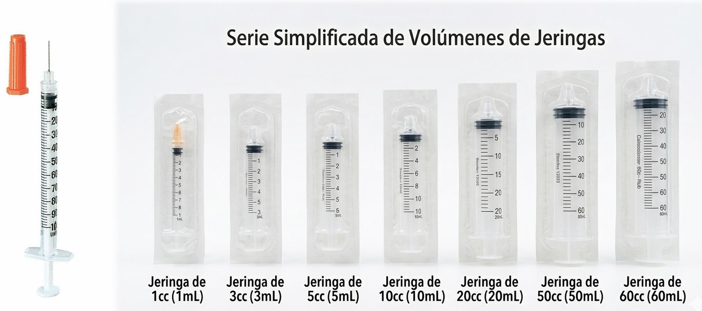

¡Excelente jornada de capacitación! Aquí les comparto el material oficial sobre Fundamentos, Técnicas y Administración Parenteral en Inyectología. 💉✨

Definición de Inyectología
La inyectología es la rama técnica de la medicina y la enfermería que rige la administración segura de medicamentos líquidos directamente en los tejidos corporales.
⚡ Acción ultra rápida
Omite el retardo digestivo.
🎯 Eficacia absoluta
Absorción y dosificación garantizadas.
🛡️ Procedimiento estéril
Exige un entorno de asepsia.
Sistemas de Actuación (Regla Clínica)
Sujeto y Sustancia
Verificación del Paciente Correcto y validación estricta del Medicamento indicado.
Dosificación y Vía
Cálculo de la Dosis Exacta y selección de la Vía de Entrada idónea (IM, SC, IV, ID).
Momento y Registro
Aplicación en la Hora Exacta junto al asiento inmediato en el Registro Médico.
Preparación de Material y Ampollas

Checklist obligatorio del set de inyección:
- Guantes de nitrilo.
- Algodón o gasas junto a alcohol al 70%.
- Jeringas y agujas estériles del calibre requerido.
- Guardianes rígidos de eliminación biológica.
- Fármaco prescrito y solución salina diluyente.
Técnica Aséptica de Carga:
- Desinfección enérgica de manos.
- Antiséptico en el cuello de la ampolla.
- Quiebre de seguridad (con gasa).
- Aspirar sin rozar los bordes externos de vidrio.
- Purgar burbujas manteniendo la aguja vertical.
Tipos de Jeringas

1 mL (Tuberculina)
Inyecciones intradérmicas finas, pruebas alérgicas y dosificación de Insulina. (0.01 mL / Unidades)
3 mL a 5 mL
Administración intramuscular estándar y vía subcutánea común. (0.1 mL o 0.2 mL)
10 mL a 20 mL
Disolución y mezcla de medicamentos, accesos venosos directos. (0.5 mL o 1.0 mL)
Tipos de Agujas (Gauge)
Rosa / Blanco (18G - 19G)
Aspiración y recarga
Verde (21G)
Vía IM (Adultos)
Azul (23G)
Vía IM (Niños) / SC
Naranja / Gris (25G - 27G)
Vías SC e ID

Vías y Ángulos Parenterales

Intramuscular (IM)
Ángulo:
90°
Profundidad: Músculo
Uso: Vacunas,
Antibióticos
Intravenosa (IV)
Ángulo: 25°
(aprox)
Profundidad: Vena
Uso: Sueros,
Fármacos
directos
Subcutánea (SC)
Ángulo: 45° (o 90°
con
pliegue)
Profundidad: Tejido
Subcutáneo
Uso:
Insulina, Heparina
Intradérmica (ID)
Ángulo:
10-15°
Profundidad: Dermis
Uso: Pruebas
de
alergia
Zonas de Punción

- Dorsoglútea: Cuadrante superior externo de la nalga. Cuidado riguroso del nervio ciático.
- Ventroglútea: El área intramuscular más segura, alejada de nervios y vasos mayores.
- Deltoidea: Tres dedos bajo el acromion. Volumen máximo reducido (hasta 2 mL).
- Cara externa del muslo (Vasto Lateral): Tercio medio. Zona de preferencia en menores de 3 años y autoadministración.
Criterios de Elección
El Fármaco
Viscosidad (acuosa, oleosa), volumen dosificado y si posee características irritantes.
La Urgencia
Vía endovenosa (IV) es de acción inmediata; IM y SC son más lentas.
El Paciente
Edad, espesor del tejido adiposo, masa muscular disponible y estado cutáneo local.


Miembro del Equipo
"Fue muy satisfactorio estar en la charla porque pude aprender las zonas donde me pueden y puedo aplicar una inyección, así como en qué profundidad debe ser suministrado el medicamento, además del uso adecuado de la jeringa."
Miembro del Equipo
"Podría presentarse una situación de emergencia en la que no haya otra opción y toque hacerse cargo. Antes de la capacitación no hubiera tenido ninguna idea de qué hacer, y después siento que podría ser de mucha utilidad en casos extremos."
Miembro del Equipo
"Aporta bastante, porque siempre es importante tener un mínimo de conocimiento ya que uno no sabe qué situación se puede presentar y uno pueda ayudar."
Miembro del Equipo
"Proporciona conocimiento básico y queda claro que sin adiestramiento y capacitación no se deben colocar inyecciones."